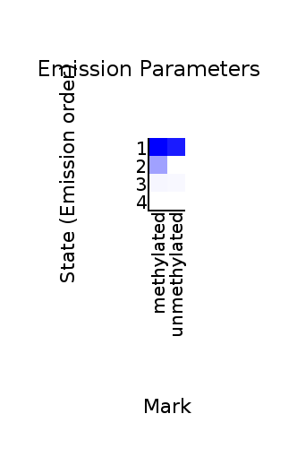
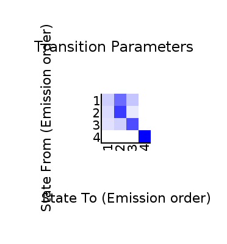

<center><h1>ChromHMM Report</h1></center>
Input Directory: /home/bronte/opt/jrc_seeker/sample_data/output/chromhmm/input_files<br>
Output Directory: /home/bronte/opt/jrc_seeker/sample_data/output/chromhmm/output_files<br>
Number of States: 4<br>
Assembly: /home/bronte/opt/ChromHMM/CHROMSIZES/hg38.txt<br>
Full ChromHMM command: LearnModel -noautoopen -s 1 -r 500 /home/bronte/opt/jrc_seeker/sample_data/output/chromhmm/input_files /home/bronte/opt/jrc_seeker/sample_data/output/chromhmm/output_files 4 /home/bronte/opt/ChromHMM/CHROMSIZES/hg38.txt
<h1>Model Parameters</h1>
<br>
<li><a href="emissions_4.svg">Emission Parameter SVG File</a><br>
<li><a href="emissions_4.txt">Emission Parameter Tab-Delimited Text File</a><br>
<br>
<li><a href="transitions_4.svg">Transition Parameter SVG File</a><br>
<li><a href="transitions_4.txt">Transition Parameter Tab-Delimited Text File</a><br><br>
<li><a href="model_4.txt">All Model Parameters Tab-Delimited Text File</a> <br>
<h1>Genome Segmentation Files</h1>
<li><a href="test_run_4_segments.bed">test_run_4 Segmentation File (Four Column Bed File)</a><br>
<br>
Custom Tracks for loading into the <a href="http://genome.ucsc.edu">UCSC Genome Browser</a>:<br>
<li><a href=test_run_4_dense.bed>test_run_4 Browser Custom Track Dense File</a> <br>
<li><a href=test_run_4_expanded.bed>test_run_4 Browser Custom Track Expanded File</a><br>
<h1>State Enrichments</h1>
<h2>test_run_4 Enrichments</h2>
